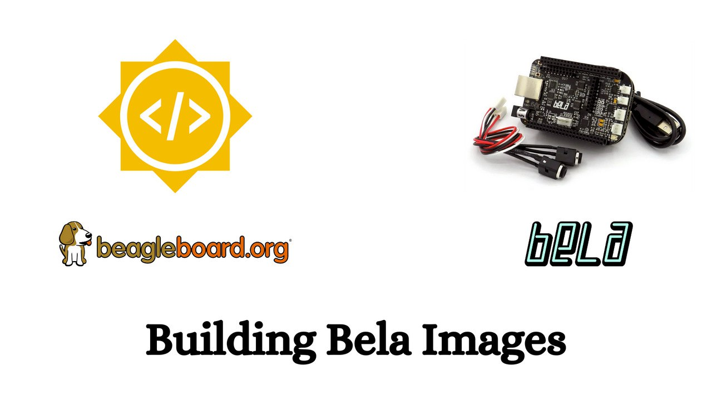

Building Bela Images
GSoC’2022 | BeagleBoard.org
Hello people! I am Kurva Prashant, a third-year undergraduate student of the Vidya Jyothi Institute of Technology, Hyderabad, India. I am glad to share that I have been accepted for Google Summer of Code 2022 at BeagleBoard.org and I am really excited to spend this summer well contributing to FOSS and working on the project “Building Bela Images”. This web page describes my journey with Bela, BeagleBoard and the project which I contributing for in Google Summer of Code 2022.

This was my first time to apply for GSoC and it was such a delight to get accepted, and I hope I can contribute to the project, achieving the desired goals.
My project is co-mentored by Giulio Moro, Vedant Paranjape, and Vaishnav Achath from the following organizations:
My Introduction to GNU/Linux
I was Introduced to the world of GNU/Linux in 2019 when I was started learning Robotics and Visual Navigation on low end machine which running “slow” due to the bloatware of windows in it. And, I stopped using the windows, removed it and started using Debian with XFCE desktop environment till then.
My Introduction to Open Hardware & Embedded Linux
I got to know about Open Hardware and Embedded Linux while learning electronics and embedded systems part of robotics. I didn’t pay much attention to it at that time and quickly moved on. After this a short talk on Liberating SBC’s using Debian by Yuvraj at MiniDebConf India 2021 which focused on Open Source Hardware like Olimex and the Debian distributions for arm based single board computers has intrigued me to start working on Open Hardware and Embedded Linux.
Past Experience with Debian
I have an experience with Debian live build system and customized my low end machine with robotics and networking packages in which it installed Debian 11 “Bullseye” with XFCE Desktop environment on it and I’m just curious to work on low end hardware, optimise software to make run very well on resource constrained devices and also porting and enabled the Government School Computer labs in our locality to specific use of free softwares and Installing BalaSwecha OS ( A GNU/Linux distribution based on Debian ).
Applying for Google Summer of Code
I came to know GSoC through Swecha, a vibrant community of software users, students, academicians and software developers who determined to provide quality software built on the guidelines of free software development model. I decided to apply this year after some searching I came across the BeagleBoard project Ideas wiki for GSoC 2022 and found the project title “Building Bela Images” quite interesting to me and submitted a proposal about it. Since, I was working on Single Board Computers and linux distributions, I had the necessary experience to make this possible.
Now, I will cover some information about my GSoC Project.
My GSoC Project
Overview
I will be working on Bela Image development to make Bela Image follow more closely with BeagleBoard Images. The Bela Image development repo is heavily based and which was initially inspired by Beagleboard Image-builder scripts. Currently, the Beagle board Image development repo diverged greatly from a common functionalities of building Images.
There is a requirement to “rebase” the functionalities of the Bela Image builder repo to the Beagleboard Image builder one. As the two codebases are drastically different we need to understand and “semantic rebase” the features of the Bela Image builder repo (xenomai kernel building scripts along with a bunch of other stuff) to Beagleboard Image builder repo. After these changes the Bela Image development will follow more closely with the Beagleboard Image development and as a result Bela Image will be updated more often and it minimizes future development effort.
Goals
In order to add the Bela Image builder features to BeagleBoard Image builder. Firstly, I’ll be building Bela Image by using BeagleBoard Image builder scripts and making necessary changes in scripts to build Image. After this I will be getting a clear idea to where to change and semantic rebase the features of Bela Image builder to BeagleBoard Image builder one.
Benefit
This project adds support for the Bela Image development to make Bela Image follow more closely with BeagleBoard Images. I mean after Bela specific changes made conditional to the Image-builder repository. The Bela Image development will be updated more often, more easily in parallel with BeagleBoard Images.
Helpful Links
- Original GSoC Project idea
- https://github.com/BelaPlatform
- https://bela.io
- https://github.com/beagleboard/image-builder
- https://github.com/BelaPlatform/bela-image-builder